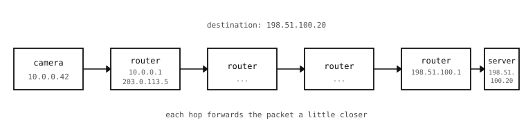

9.6. Packets and routing¶
An IP address says who a message is for. The mechanism that actually delivers it is called routing, and it is the hop-by-hop process by which a packet travels from a sender’s local network to a receiver’s local network, possibly very far away.
9.6.1. A packet, briefly¶
A packet is the IP layer’s unit of work – a chunk of bytes with a small header and a payload. The header has two fields that matter for routing:
The source IP address (where the packet came from).
The destination IP address (where it is going).
The payload is whatever the transport layer asked the network layer to deliver. The packet header also includes a time-to-live counter, a checksum over the header, and a few control flags. None of those are things the camera’s Python code touches directly.
Packets do not promise anything more than “we tried” – they can be lost, duplicated, or delivered out of order. Reliability and ordering are problems the transport layer above solves; the network layer just does its best to forward each packet toward its destination.
9.6.2. Hop by hop¶
The packet leaves the camera and arrives at the first device that does not sit on the camera’s local segment: the default gateway. (The previous page mentioned DHCP handing the camera the gateway’s address when the network came up.) That device is a router – a box whose job is to receive packets, look at their destination, and forward them onward.

A packet from the camera to the destination hops between routers, each one a step closer.¶
The router has a routing table – a list of “for destinations matching this pattern, send the packet out this interface”. For destinations on the same network as the camera, the entry says “send it back down the cable it came in on”. For destinations on the wider internet, the entry says “send it to the upstream router”. For known patterns of destinations (a corporate VPN, a specific business partner’s network, a satellite link), the router may have a more specific entry that overrides the default.
The upstream router does the same thing. And the next one. And the next. Each hop is the same shape: receive the packet, look up the destination in the table, send it out the correct interface. Eventually the packet arrives at a router that is on the same local segment as the destination IP. That router delivers the final hop, the destination receives the packet, and the trip is over.
9.6.3. The endpoints do not know the route¶
A camera sending a packet to a remote server does not know how the packet will get there. It only knows the destination IP and the address of its own default gateway. Everything between – which routers, which fibres, which underwater cables – is something the routers along the path decide as they go, based on their own tables. The routers themselves only know their immediate neighbours and the rough direction of common destinations; no single device on the internet has a complete map of it.
That decentralisation is why the network keeps working when individual paths fail. A cut cable somewhere in the middle becomes a re-routing event at a few routers; the endpoints never notice. It is also why a packet from a Tokyo camera to a Dublin server can succeed without either side knowing what countries lie in between.
9.6.4. What this means for a Python script¶
The camera’s job at the network layer comes down to:
Have an IP address.
Know the address of the default gateway (DHCP fills this in automatically).
Hand outbound packets, addressed to any IP, to that gateway and trust the rest of the path.
A script never picks a route, never names an intermediate hop, and never sees the routers in the middle. It writes the destination IP onto the packet and the network layer takes over. From a Python script all of routing is just a property of the network the camera has joined – “the gateway sends packets somewhere useful for me”.
The transport layer that comes next assumes routing just works, and builds reliability, ordering, and program-to-program addressing on top of that.